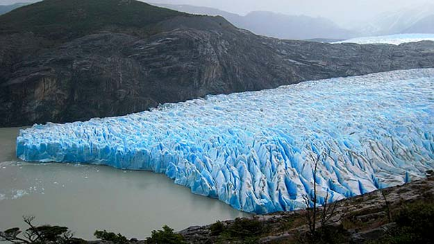

Abstract
Glaciers are retreating globally and are projected to continue to lose mass in the coming decades, directly affecting downstream ecosystems through changes in glacier runoff. Estimating the future evolution of glacier runoff involves several sources of uncertainty in the modelling chain, which to date have not been comprehensively assessed on a regional scale. In this study, we used the Open Global Glacier Model (OGGM) to estimate the glacier evolution of each glacier (area > 1 km2) in the Patagonian Andes (40–56° S), which together represent 82 % of the glacier area of the Andes. We used different glacier inventories (n = 2), ice thickness datasets (n = 2), historical climate datasets (n = 4), general circulation models (GCMs; n = 10), emission scenarios (SSPs; n = 4), and bias correction methods (BCMs; n = 3) to generate 1,920 possible scenarios over the period 1980–2099. For each scenario and catchment, glacier runoff and melt on glacier time series were characterized by ten glacio-hydrological signatures (i.e., metrics). We used the permutation feature importance of random forest regression models to assess the relative importance of each source on the signatures of each catchment. Considering all scenarios, 61 % ± 14 % of the catchment area (30 % ± 13 % of glacier area) has already peaked in terms of glacier melt (year 2020), and 43 % ± 8 % of the catchment area (18 % ± 7 % of glacier area) will lose more than 80 % of its volume this century. Considering the melt on glacier signatures, the future sources of uncertainty (GCMs, SSPs and BCMs) were the main source in only 18 % ± 21 % of the total catchment area. In contrast, the reference climate was the most important source in 78 % ± 21 % of the catchment area, highlighting the importance of the choices we make in the calibration procedure. The results provide a basis for prioritizing future efforts (e.g., improve reference climate characterization) to reduce glacio-hydrological modelling gaps in poorly instrumented regions, such as the Patagonian Andes.

Rodrigo Aguayo
Postdoctoral researcher
My research interests include hydrology, glaciers, land-ocean interface and climate change